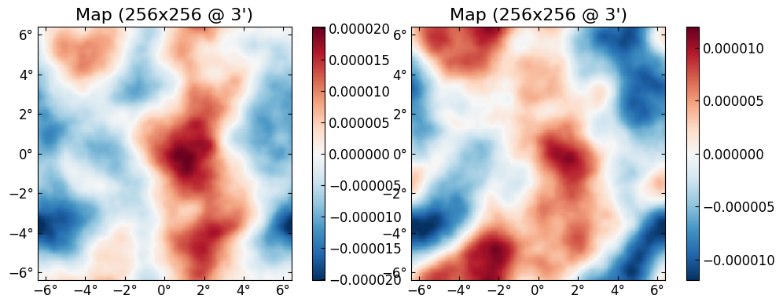
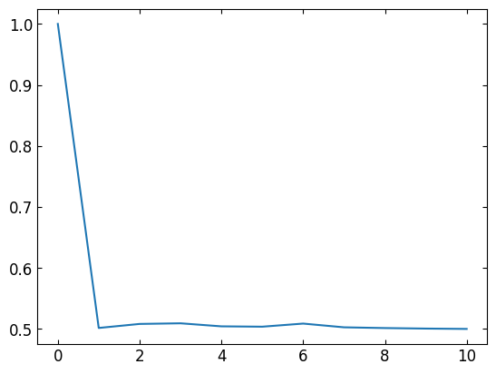

using Revise
using CMBLensing
using CMBLensing: @ntpack
using Random, Loess, Parameters, Random.DSFMT, Interpolations
using JLD2┌ Info: Recompiling stale cache file /home/marius/.julia/compiled/v1.2/CMBLensing/niPeo.ji for CMBLensing [b60c06c0-7e54-11e8-3788-4bd722d65317]
└ @ Base loading.jl:1240
┌ Warning: Package CMBLensing does not have Setfield in its dependencies:
│ - If you have CMBLensing checked out for development and have
│ added Setfield as a dependency but haven't updated your primary
│ environment's manifest file, try `Pkg.resolve()`.
│ - Otherwise you may need to report an issue with CMBLensing
└ Loading Setfield into CMBLensing from project dependency, future warnings for CMBLensing are suppressed.
WARNING: Method definition inv(LinearAlgebra.Diagonal{T, V} where V<:AbstractArray{T, 1} where T) in module LinearAlgebra at /home/marius/src/julia-1.2/usr/share/julia/stdlib/v1.2/LinearAlgebra/src/diagonal.jl:496 overwritten in module CMBLensing at /home/marius/work/baylens/src/util.jl:168.
** incremental compilation may be fatally broken for this module **
WARNING: Method definition (::Type{CMBLensing.DataSet{Td, TCn, TCf, TCf̃, TCϕ, TCn̂, TB̂, TM, TB, TD, TG, TP} where TP where TG where TD where TB where TM where TB̂ where TCn̂ where TCϕ where TCf̃ where TCf where TCn where Td})(CMBLensing.DataSet{Td, TCn, TCf, TCf̃, TCϕ, TCn̂, TB̂, TM, TB, TD, TG, TP} where TP where TG where TD where TB where TM where TB̂ where TCn̂ where TCϕ where TCf̃ where TCf where TCn where Td) in module CMBLensing at /home/marius/.julia/packages/Parameters/NholY/src/Parameters.jl:526 overwritten at /home/marius/work/baylens/src/likelihood.jl:52.
** incremental compilation may be fatally broken for this module **
WARNING: Method definition Type(Any, Type{CMBLensing.DataSet{Td, TCn, TCf, TCf̃, TCϕ, TCn̂, TB̂, TM, TB, TD, TG, TP} where TP where TG where TD where TB where TM where TB̂ where TCn̂ where TCϕ where TCf̃ where TCf where TCn where Td}, CMBLensing.DataSet{Td, TCn, TCf, TCf̃, TCϕ, TCn̂, TB̂, TM, TB, TD, TG, TP} where TP where TG where TD where TB where TM where TB̂ where TCn̂ where TCϕ where TCf̃ where TCf where TCn where Td) in module CMBLensing overwritten.
** incremental compilation may be fatally broken for this module **rfid = 0.1
Cℓ = camb(r=rfid);@unpack f, f̃, ϕ, ds, ds₀ = load_sim_dataset(
seed = 0,
rfid = rfid,
Cℓ = Cℓ,
θpix = 3,
Nside = 256,
use = :P,
T = Float32,
μKarcminT = 10/√2,
)
@unpack Cf, Cϕ = ds₀;# mixing matrices
σ²len=deg2rad(5/60)^2
Nϕ = nan2zero.(ϕqe(ds₀)[2])/2
ds = DataSet(ds,
G = ParamDependentOp(let SN=Cϕ/Nϕ, G₀=sqrt(1+2/SN)
(;Aϕ=1, _...)-> @. sqrt(1+2/(Aϕ*SN))/G₀
end),
D = (@. nan2zero(sqrt(1 + 2/(Cf/(ds.Cn̂+σ²len))))),
);sample_joint(
ds,
Cℓ = Cℓ,
θrange = (Aϕ=range(0.5, 1.9, length=25),),
θstart = (Aϕ=1,),
symp_kwargs = (N=25, ϵ=0.02),
nsamps_per_chain = 10,
nchains = 1,
pmap = map,
nchunk = 2,
nsavemaps = 10,
nburnin_always_accept = Inf,
nburnin_fixθ = 0,
metadata = (@ntpack f f̃ ϕ ds₀),
progress = :summary,
filename = "testchain.jld2"
);[32mGibbs chain: 100%|██████████████████████████████████████| Time: 0:05:22[39m@load "testchain.jld2" 2-element Array{Symbol,1}:
:chains
:rundatusing Statisticsgetindex.(chains[1][2:end],:timing)10-element Array{NamedTuple{(:f, :θ, :ϕ),Tuple{Float64,Float64,Float64}},1}:
(f = 3.115016167, θ = 8.954657676, ϕ = 27.103998331)
(f = 0.96117215, θ = 9.723460596, ϕ = 20.927602568)
(f = 0.716426248, θ = 9.267559107, ϕ = 19.746085108)
(f = 0.634769225, θ = 8.661115741, ϕ = 19.175055979)
(f = 0.62653508, θ = 8.689044008, ϕ = 20.336935978)
(f = 1.265916839, θ = 10.242237773, ϕ = 19.286341166)
(f = 1.010267911, θ = 9.267745122, ϕ = 20.404541676)
(f = 0.835300153, θ = 8.484976122, ϕ = 22.227946742)
(f = 0.647691704, θ = 8.461052793, ϕ = 22.776909722)
(f = 0.578629753, θ = 8.642342834, ϕ = 21.026899381)plot([rundat[:metadata].ϕ mean(getindex.(filter(s->haskey(s,:ϕ),chains[1]),:ϕ))])
(PyPlot.Figure(PyObject <Figure size 1120x400 with 4 Axes>), PyCall.PyObject[PyObject <matplotlib.axes._subplots.AxesSubplot object at 0x7f6cb1b65080> PyObject <matplotlib.axes._subplots.AxesSubplot object at 0x7f6cb1b24908>], Symbol[:Tx])plot(first.(getindex.(chains[1],:θ)))
1-element Array{PyCall.PyObject,1}:
PyObject <matplotlib.lines.Line2D object at 0x7f6c96fe71d0>